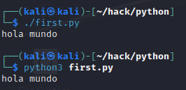

<<<<<<< HEAD
intro
Maneras de ejecutar

Poner 3 comillas significa varias lineas en un print (estando en diferentes lineas)


=======
intro
Maneras de ejecutar
Poner 3 comillas significa varias lineas en un print (estando en diferentes lineas)
>>>>>>> 70eeabf7fe0392c3aa721948c166730523aa1e3e